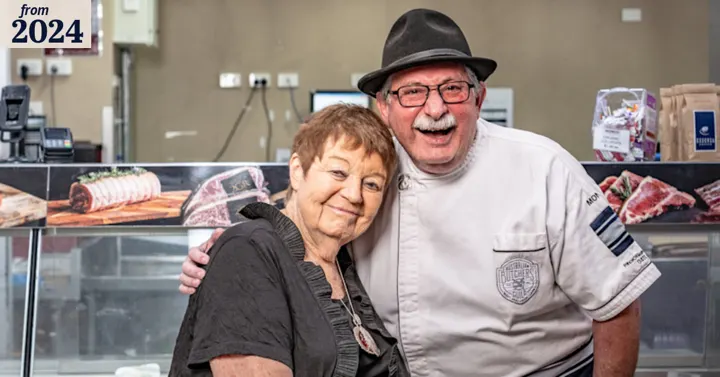

The Sydney Morning Herald
Social impact
A human story that travelled: Good Weekend’s “For decades, Vince remembered what one teacher had told him. Then they met again.”
Real stories, linked to the original. Tap the deck page to enlarge.

The Sydney Morning Herald
Tell us the story. We’ll make it the one people can’t ignore.
Start the conversation →